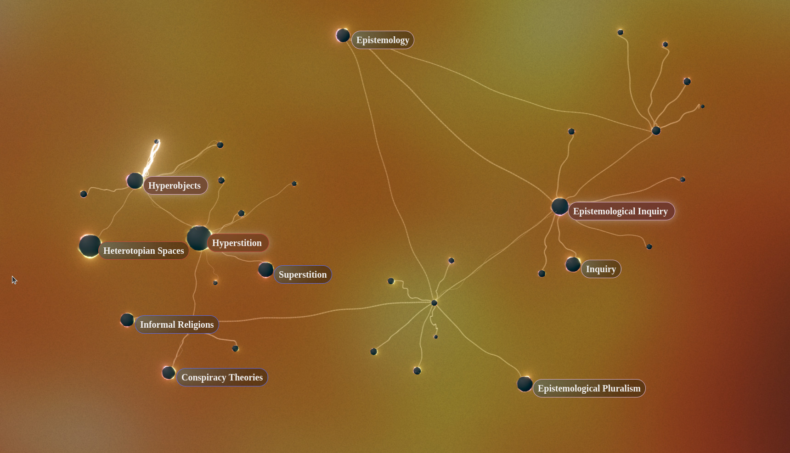
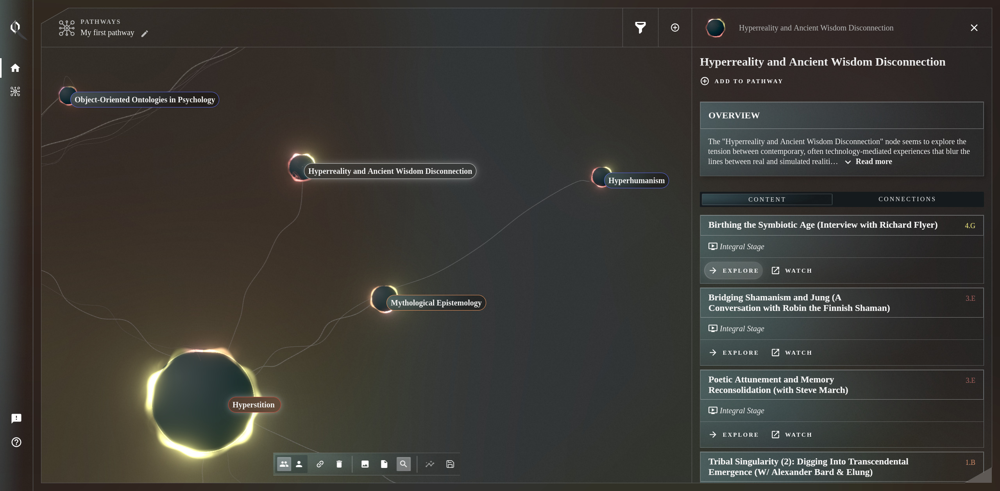
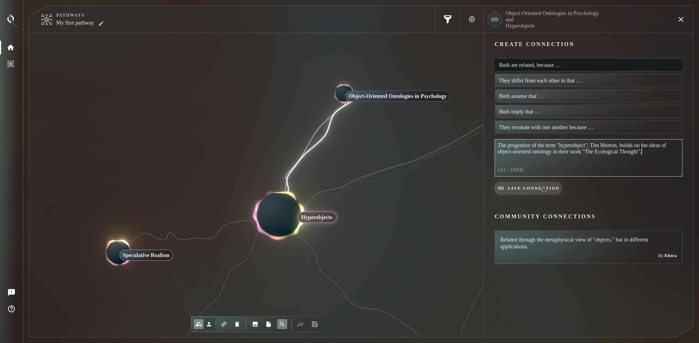

Khora
- Khora website
- My article on optimised video in Khora
- My Khôral Notes talk "Hoping for a Whole Internet"

In 2025 I worked with Palinode, a US-based philosophy initiative, to develop a MVP of Khora, an innovative platform for visually exploring philosophy. Working together with Karin Valis, I built a 3D visual interface into Khora's knowledge graph, using Three.js, R3F and GLSL shaders as well as various graph layout and manipulation techniques.

Khora uses a combination of graph database, vector embeddings and LLM-based summarisation to build a rich conceptual model on top of a body of philosophical writings, podcasts, lectures and videos. Connections are initially scaffolded by the LLM-based ingest, but users are encouraged to create their own connections, working towards a crowdsourced knowledge commons. Augmented by the knowledge graph, Khora is able to search the library in deeply semantic and often unexpected ways. The web-based interface allows the user to traverse and store pathways through the knowledge graph, as well as reorganise and annotate their thought process.

To visualise the Nodes - a core component of Khora's information architecture - I developed a custom GLSL shader animation, which doubles up as a loose, gentle visualisation of the content categories connected to the given Node. I used layers of Perlin noise, distance and trigonometric functions to create the glowing ring effect, as well as randomly appearing "solar flares". The connections between nodes are parametric spline clusters, visualising the strength and overall nature of all connections made between the given two Nodes.
Besides developing the Khora web app, I also helped the Palinode team with the essentials of becoming a software company, setting up cloud infrastructure, CI/CD and automated testing, product documentation as well as security and other IT practices.